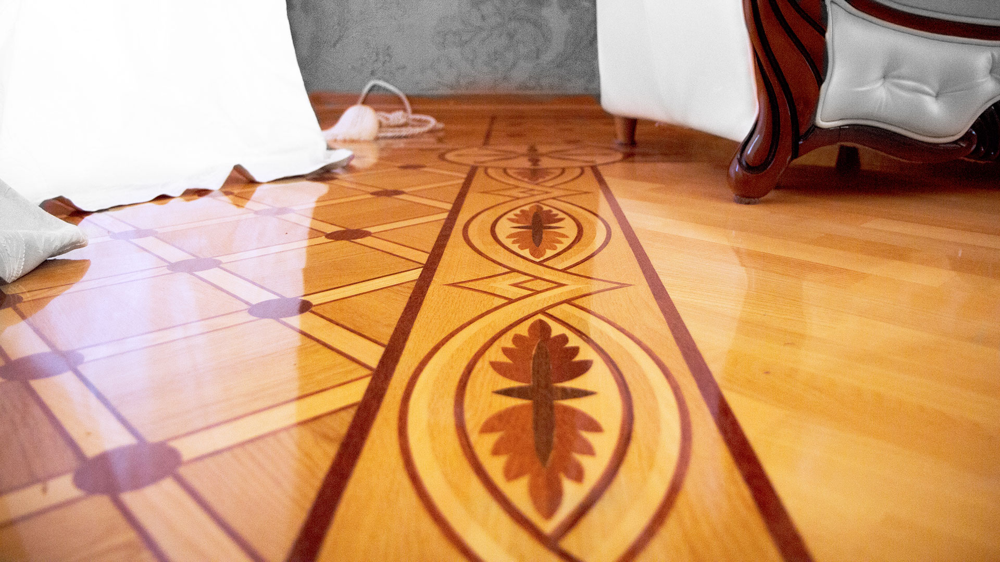

Наши работы





Шлифовка пола и паркета представляет собой комплексный процессом, требующим немалых познаний и многолетней практики. От качества выполненной работы напрямую зависит внешний вид и срок службы пола. Наши мастера проводят шлифовку паркета в Гомеле с соблюдением всех пунктов технологического процесса, с использованием высококачественных шлифовальных машин немецкого производства, которые проводят шлифовку без пыли. Мы предлагаем услуги по шлифовке, обновлению и ремонту паркета, включая шпатлевание щелей, лакировку и снятие старых покрытий.
ЗаказатьШлифовка паркета является заключительным этапом укладки пола. На этом этапе паркет приобретает свой законченный вид, который будет радовать хозяев долгие годы. Поэтому к процессу шлифовки необходимо подходить с максимальной тщательностью.
Если раньше выравнивание деревянных поверхностей проводилось с помощью циклевки — соскабливания неровностей ручной циклей, то сегодня в распоряжении мастеров есть механизированное оборудование. И наличие качественного оборудования является одним из ключевых факторов, влияющих на качество шлифовки.
Наши мастера проводят шлифовку паркета в Гомеле с помощью перечня специализированного оборудования немецкого производства. Это позволяет добиться результата по европейским стандартам качества и провести шлифовку без пыли. Оборудованные специальной системой для сборки пыли шлифовальные машины способны изолировать в процессе работы ¬¬до 99% нежелательных частиц, сохраняя интерьер дома.
В Гомеле шлифовку пола зачастую проводят с помощью барабанных шлифовальных машин СО-206, СО-331 украинского и белорусского производства. В силу своей конструкции эти аппараты оставляют волнообразную рябь на поверхности пола и портит его внешний вид. Но это оборудование позволяет сэкономить на шлифовке, жертвуя конечным результатом.
Другим немаловажным фактором при шлифовке пола является комплексный подход. Как правило, для проведения качественных работ требуется наличие нескольких видов оборудования.
Процесс шлифовки паркета проходит в несколько этапов. На первом этапе проводится грубая шлифовка, чтобы удалить старое покрытие и получить ровную поверхность для проведения последующих работ. На следующих этапах удаляются следы черновой работы для нанесения лаков или масел, предохраняющих пол от химических, тепловых и физических воздействий.
Мастер также должен знать и ряд тонкостей процесса шлифовки пола. Во-первых, необходимо поддерживать чистоту поверхности пола и чистоте оборудования, от плавности работы которой зависит конечный результат. Во-вторых, использование качественного оборудования и расходных материалов является залогом долговечности и эстетичности покрытия. И наконец, необходимо устанавливать уровень давления барабана и управлять машиной в соответствии с зернистостью материала, а также не допускать чрезмерного потребления расходных материалов, чтобы избежать повреждения покрытия.
Шлифовка паркета выполняется не только после укладки нового напольного покрытия. Зачастую, мастера рекомендуют проводить шлифовку один раз каждые 5 лет, чтобы сохранить пол в идеальном состоянии и продлить срок его службы. Тем не менее, в большинстве случаев тем же способом можно качественно обновить паркет без пыли и в более запущенных случаях.


Однокомпонентный водный лак для паркета, применяемый для паркетных и деревянных напольных покрытий
Заказать

Предназначен для приклеивания традиционного паркета, паркетной мозаики, паркета из экзотического дерева, по цементным и деревянным основаниям
Заказать

Предназначенный для паркетных полов вододисперсионный однокомпонентный лак. Основан на модифицированной полиуретановой дисперсии, благодаря чему является экологически чистым и устойчивым к истиранию
Заказать

Бесцветное покрытие для внутренних работ. Подходит для паркета, массивной и паркетной доски, а также пробковых полов. Подчеркивает естественную красоту деревянной поверхности.
Заказать